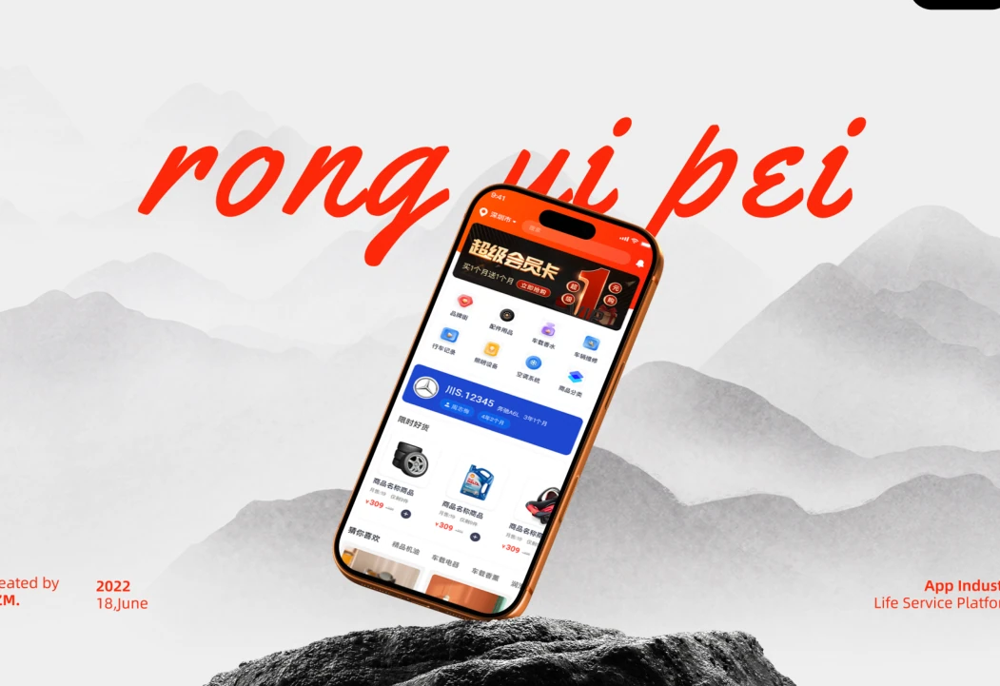
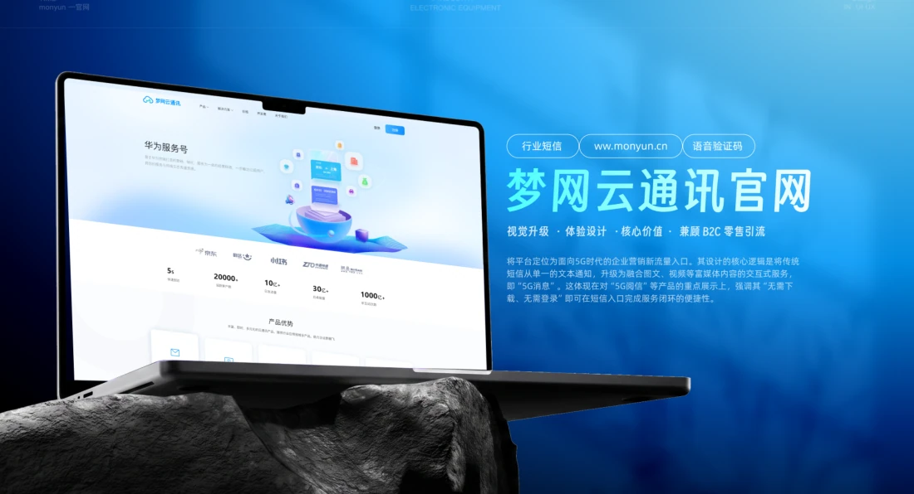
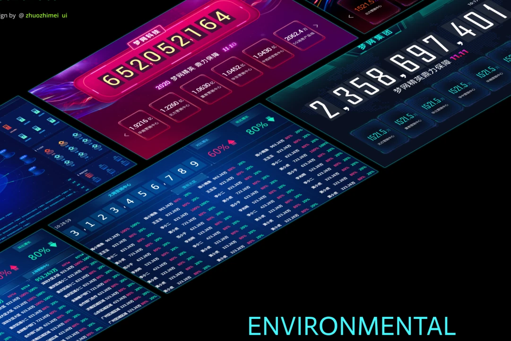
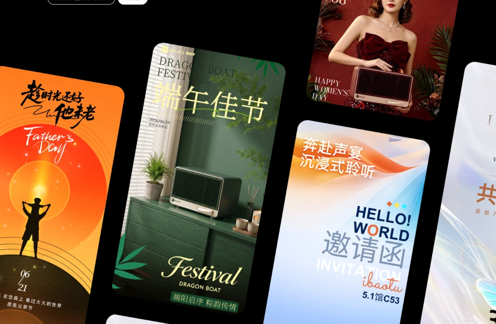

界面与体验 · Digital Audio Player
PROJECT INDEX
界面与体验 · Digital Audio Player

界面与体验 · Music Control App

界面与体验 · Notify Wang

界面与体验 · Rong Yi Pei

网站与平台 · YY SOUND

网站与平台 · Monyun Cloud Communications

网站与平台 · Unified Message Center

网站与平台 · Data Visualization

运营视觉 · Campaign Visual Design

品牌与 IP · Shun Xiao Ge
ABOUT THE DESIGNER
拥有 11 年 UI 设计经验，覆盖消费端产品、企业服务与智能硬件。参与过从需求梳理、交互与视觉设计，到规范建设和落地交付的完整流程。
CONTACT